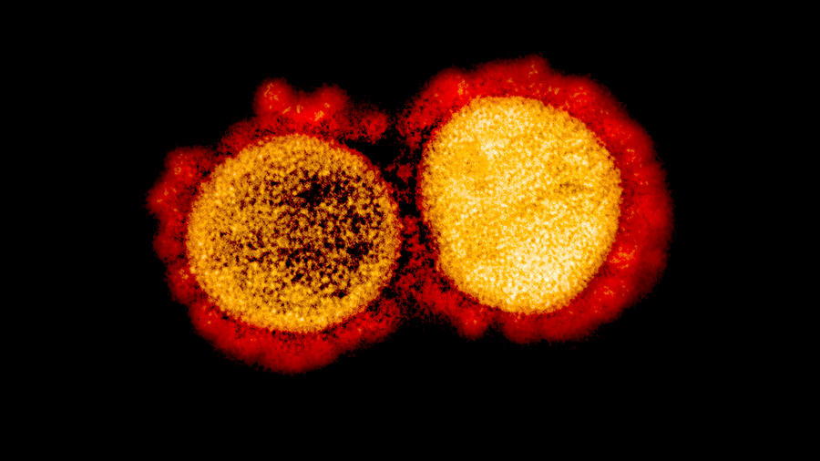
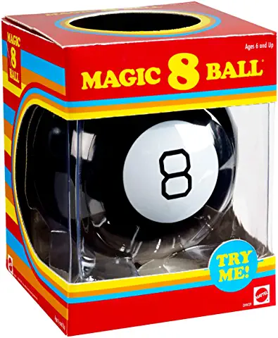

US approves first rapid home Covid-19 test

Posted On: 2020-11-18T02:22:50
Posted By: Oldeconomybuyer
Why would anyone ever willingly take a COVID-19 test?
Posted On: 2020-11-18T02:22:50
Posted By: Oldeconomybuyer
$50 a test is affordable?
SNORT.
Posted On: 2020-11-18T02:26:24
Posted By: Theophilus
Why don’t I just wait until I actually feel sick to know I have it instead of taking a test?Because that apparently almost never happens.
Posted On: 2020-11-18T02:27:18
Posted By: mewzilla
The test is designed to be affordable and is intended to cost less than $50
— affordable for some.
Posted On: 2020-11-18T02:37:07
Posted By: mikey_hates_everything
Will the 'Rapid Home Covid-19 test' have as high a percentage of false positive results as the ones administered by the hospitals and the governments?
Or maybe even higher false positive rates?
Will it actually be testing for specifically living Covid-19, or will any SARS type flu or coronavirus or their antibodies set it off like the ones administered by the hospitals or the governments do?
Posted On: 2020-11-18T02:55:58
Posted By: PIF
Curiosity in plain, brown paper bags ?
Think about it
Posted On: 2020-11-18T03:04:43
Posted By: Theophilus
Elon Musk took four tests in one day and received two positives and two negatives.Erykah Badu tested positive for COVID in one nostril but negative in the other.
Given that, I suggest a test that is just as accurate for the low price of $8.88.The bad news is that it is manufactured in Red China.
Posted On: 2020-11-18T03:29:20
Posted By: knarf
Affordable.I sell Korean tests that are 98% accurate for under $20 a test.That’s retail.
Posted On: 2020-11-18T03:39:03
Posted By: Oldeconomybuyer
Results are under 10 mins not 30 too.
Posted On: 2020-11-18T04:03:07
Posted By: angmo
Much more false testing in immediate future I predict.
Posted On: 2020-11-18T04:05:00
Posted By: angmo

Content Date: 2020-11-18
Download Date: 2021-04-21
Document ID: L0C04APJW